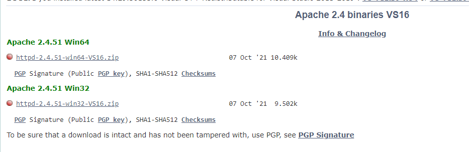

Перед установкой Apache следует отметить, что если наша ОС Windows, то в системе должны быть установлен пакет для C++, который можно найти по адресу для 64-битной и для 32-битной.
Итак, если нашей ОС является Windows, перейдем на сайт http://www.apachelounge.com/, который предоставляет дистрибутивы Apache для Windows:

Конфигурация веб-сервера
Теперь проведем конфигурацию сервера, чтобы связать его с ранее установленным интерпретатором PHP.. Для этого найдем в папке веб-сервера в каталоге conf (то есть C:\Apache24\conf ) файл httpd.conf
Откроем этот файл в текстовом редакторе. httpd.conf настраивает поведение веб-сервера. Мы не будем подобно затрагивать его описания, а только лишь произведем небольшие изменения, которые потребуются нам для работы с PHP.
Прежде всего подключим PHP. Для этого нам надо подключить модуль php, предназначенный для работы с apache. В частности, в папке php мы можем найти файл php8apache2_4.dll: